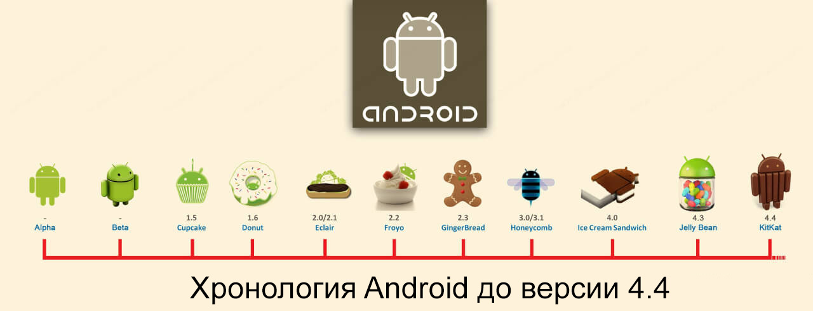

Логотип Android с 2019 года
Android - это мобильная операционная система, основанная на модифицированной версии ядра Linux и другого программного обеспечения с открытым исходным кодом, разработанная в первую очередь для мобильных устройств с сенсорным экраном, таких как смартфоны и планшеты. Android разрабатывается консорциумом разработчиков, известным как Open Handset Alliance, и коммерчески спонсируется Google. Он был представлен в ноябре 2007 года, а первое коммерческое устройство Android было выпущено в сентябре 2008 года.
Это бесплатное программное обеспечение с открытым исходным кодом; его исходный код известен как Android Open Source Project (AOSP), который в основном лицензируется по лицензии Apache. Однако большинство устройств Android поставляются с предустановленным дополнительным проприетарным программным обеспечением, в первую очередь Google Mobile Services (GMS), которое включает в себя основные приложения, такие как Google Chrome, платформу цифрового распространения Google Play и соответствующую платформу разработки служб Google Play. Около 70 процентов смартфонов Android работают под управлением экосистемы Google; конкурирующие экосистемы и форки Android включают Fire OS (разработанную Amazon) или LineageOS. Однако название и логотип «Android» являются товарными знаками Google, которые налагают стандарты, ограничивающие использование «несертифицированных» устройств за пределами их экосистемы для использования брендов Android.
Исходный код использовался для разработки вариантов Android для ряда другой электроники, такой как игровые консоли, цифровые камеры, портативные медиаплееры, ПК и другие, каждая из которых имеет специализированный пользовательский интерфейс. Некоторые широко известные производные включают Android TV для телевизоров и Wear OS для носимых устройств, разработанные Google. Программные пакеты на Android, использующие формат APK, обычно распространяются через магазины проприетарных приложений, такие как Google Play Store, Samsung Galaxy Store и Huawei AppGallery, или платформы с открытым исходным кодом, такие как Aptoide или F-Droid.
Android является самой продаваемой ОС в мире для смартфонов с 2011 года и для планшетов с 2013 года. По состоянию на май 2017 года у нее более двух миллиардов активных пользователей в месяц, это самая большая установленная база среди всех операционных систем, а по состоянию на август 2020 года - Google В Play Маркете более 3 миллионов приложений. Текущая стабильная версия - Android 11, выпущенная 8 сентября 2020 года.
Содержание
Первый логотип Android
11 июля 2005 года корпорация Google купила компанию Android, Inc. за 130 миллионов долларов.
5 ноября 2007 года компания официально объявила о создании Open Handset Alliance (OHA) и анонсировала открытую мобильную платформу Android, а 12 ноября 2007 года альянс представил первую версию пакета для разработчиков Android «Early Look» SDK(известную также как Android SDK m3-rc20a) и эмулятор Android.
Кодовое имя каждой версии операционной системы Android ранее представляло собой название какого-либо десерта (это справедливо для версий с 1.5 по 9). Первые буквы наименований в порядке версий соответствуют буквам латинского алфавита: 1.5 Cupcake («кекс»), 1.6 Donut («пончик»), 2.0/2.1 Eclair («эклер»), 2.2 Froyo (обозначение десерта «замороженный йогурт» — от англ. frozen yogurt), 2.3 Gingerbread («имбирный пряник»), 3.0 Honeycomb («пчелиные соты»), 4.0 Ice Cream Sandwich («мороженое в вафлях», в виде брикета), 4.1/4.2/4.3 Jelly Bean («желейные бобы» — вид конфет), 4.4 KitKat (в честь одноимённого бренда шоколадных батончиков), 5.0/5.1 Lollipop («леденец на палочке»), 6.0 Marshmallow («маршмэллоу»), 7.0 Nougat («нуга»), 8.0 Oreo (печенье «Oreo»), 9.0 Pie («пирог»). Традиция наименования версий Android в честь сладостей прекратилась с выходом Android 10.
23 сентября 2008 года официально вышла версия 1.0 (до этого были неофициальные 0.5, 0.6 и 0.9 версии в виде эмулятора операционной системы), а также первый полноценный пакет разработчика SDK 1.0, Release 1 и к октябрю 2008 версия 1.0 уже дебютировала на настоящем аппарате T-Mobile G1 (также известном как HTC Dream). С момента выхода первой версии платформы произошло несколько обновлений системы. Эти обновления, как правило, касаются исправления обнаруженных ошибок и добавления новой функциональности в систему.
В 2009 году было представлено целых четыре обновления платформы. Так, в феврале вышла версия 1.1, но с исправлением различных ошибок. В апреле и сентябре вышли ещё два обновления — 1.5 «Cupcake» («кекс») и 1.6 «Donut» («пончик») соответственно. Обновление «Cupcake» привнесло существенные изменения: виртуальная клавиатура, воспроизведение и запись видео, браузер и другие. В «Donut» впервые появились поддержка различных разрешений и плотности экрана и сетей CDMA. В октябре того же года вышла версия операционной системы Android 2.0 «Eclair» («эклер») с поддержкой нескольких аккаунтов Google, поддержкой браузером языка HTML5 и других нововведений, а также после небольшого обновления в пределах версии «Eclair» (2) появились «живые обои» и был видоизменён экран блокировки.
В середине 2010 года Google представила Android версии 2.2 под наименованием «Froyo» («замороженный йогурт»), а в конце 2010 года — Android 2.3 «Gingerbread» («имбирный пряник»). После обновления «Froyo» стало возможно использовать смартфон в качестве точки доступа, использовать традиционную блокировку смартфона цифровым или буквенно-цифровым паролем и другие изменения, а обновление «Gingerbread» привнесло более полный контроль над функцией копирования и вставки, улучшение управления питанием и контроля над приложениями, поддержку нескольких камер на устройстве и т. д.
22 февраля 2011 года была официально представлена ориентированная на интернет-планшеты платформа Android 3.0 «Honeycomb» («пчелиные соты»). Исходный код этой версии так и не был открыт компанией Google в связи с опасениями портирования её на смартфоны, для которых она не была предназначена.
Android 4.0 «Ice Cream Sandwich» («сэндвич с мороженым»), вышедшая 19 октября 2011 года, — первая универсальная платформа, которая предназначена как для планшетов, так и для смартфонов. Также обновление принесло новый интерфейс «Holo», который использовался до Android 4.4.4 KitKat .

В июне 2012 вышло обновление под названием «Jelly Bean» (желейная конфета) с порядковым номером 4.1, который сменился на 4.2 вследствие небольшого обновления в конце октября того же года и на 4.3 после обновления в июле 2013.
31 октября 2013 года Google представила следующую версию операционной системы Android 4.4, которая получила название шоколадного батончика «KitKat» по соглашению с компанией производителем Nestlé. Впервые KitKat появился на Nexus 5; эта версия Android оптимизирована для работы на более широком наборе устройств, имеющих 512 МБ ОЗУ и экран с разрешением 800x480 пикс. в качестве рекомендуемого минимума. Также, в качестве тестовой опции, в настройках разработчика стала доступна виртуальная машина ART.
25 июня 2014 Google представили Android L, доступный для разработчиков, пользователей смартфонов Nexus, а также некоторых других смартфонов.
15 октября 2014 года была официально анонсирована Android 5.0 Lollipop (леденец). Главные обновления системы — новый дизайн Material Design и полный переход к виртуальной машине ART. Также, если на Android-устройстве установлен пароль или графический ключ и если поблизости находятся часы хозяина устройства с Android Wear, то устройство автоматически разблокируется.
9 декабря 2014 Google заменила официальную среду разработки, основанную на Eclipse (adt-bundle), на Android Studio.
В 2015 году была анонсирована операционная система для носимых устройств Android Wear (позже Wear OS). Также на Google IO были представлены версии Android Auto (для автомобилей) и Android TV (для телевизоров), таким образом Android перестал быть операционной системой только для мобильных устройств.
29 мая 2015 Google представила Android M. По словам Google, главная цель новой операционной системы — улучшить пользовательский опыт общения со смартфоном, сделать взаимодействие интуитивнее и проще. 17 августа 2015 официально стало известно, что эта версия получила название Android 6.0 Marshmallow(зефир).
19 мая 2016 года на конференции разработчиков Google I/O была представлена Android N, а 1 июля Google официально объявила название этой версии Android — Android 7.0 Nougat. Рассылка финальной версии операционной системы стартовала 22 августа 2016 года. Поддерживаемые устройства: Huawei Nexus 6P, LG Nexus 5X, Motorola Nexus 6, HTC Nexus 9, ASUS Nexus Player, Google Pixel C и General Mobile 4G.
В марте 2017 года был представлен Android O для разработчиков. Пользовательская версия была выпущена 21 августа 2017 года как 8.0.0 Oreo. 5 декабря 2017 года была выпущена стабильная сборка Android Oreo 8.1.
7 марта 2018 года Google выпустила Android P DP1, а первая бета-версия вышла 8 мая 2018 года, но не только для Pixel, также бету получили Sony Xperia XZ2, Nokia 7 Plus, Xiaomi Mi MIX 2s, Vivo X21, Oppo R15 Pro, Essential Phone, OnePlus 6. Рассылка релизной версии Android 9 Pie началась 6 августа 2018 года.
13 марта 2019 года Google начала открытое бета-тестирование ОС Android Q Beta 1, которая уже доступна для смартфонов Pixel всех поколений. Всего компания собирается выпустить 6 бета-версий ОС. 3 апреля 2019 года вышла Android Q Beta 2, которая появилась в виде GSI-образов, кроме образов для смартфонов Pixel. С их помощью разработчики любого устройства, поддерживающего Project Treble, смогут поставить данную версию ОС для ознакомления и тестирования своих программ. Также Google начала тестирование жестов, похожих на жесты с iPhone X, ответы в мессенджерах в всплывающих окнах, не заходя в само приложение, управление воспроизведением мультимедиа в шторке и новое управление громкостью.
3 сентября 2019 года Google выпустила стабильную версию Android 10 для смартфонов семейства Pixel.
19 февраля 2020 года Google выпустила developer-preview-версию Android 11 для смартфонов семейства Pixel (за исключением смартфонов Pixel 1-го поколения).
Разработка
Android разрабатывается Google до тех пор, пока не будут готовы к выпуску последние изменения и обновления, после чего исходный код становится доступным для Android Open Source Project (AOSP), инициативы с открытым исходным кодом, возглавляемой Google. Код AOSP можно найти без изменений на некоторых устройствах, в основном на устройствах бывшей серии Nexus и текущей серии Android One.
Исходный код, в свою очередь, настраивается производителями оригинального оборудования (OEM) для работы на их оборудовании. Исходный код Android не содержит драйверов устройств, часто проприетарных, которые необходимы для определенных аппаратных компонентов. В результате большинство устройств Android, включая собственные устройства Google, поставляются с комбинацией бесплатного программного обеспечения с открытым исходным кодом и проприетарного программного обеспечения, при этом программное обеспечение, необходимое для доступа к службам Google, попадает в последнюю категорию.
Применение ядра Linux
Ядро Android основано на ветвях долгосрочной поддержки (LTS) ядра Linux. С 2020 года Android использует версии ядра Linux 4.4, 4.9 или 4.14. Фактическое ядро зависит от конкретного устройства.
Вариант ядра Linux для Android имеет дальнейшие архитектурные изменения, которые реализованы Google за пределами типичного цикла разработки ядра Linux, такие как включение таких компонентов, как деревья устройств, ashmem, ION и различная обработка нехватки памяти (OOM). Некоторые функции, которые Google внесла обратно в ядро Linux, в частности, функция управления питанием, называемая «wakelocks», изначально были отклонены разработчиками основного ядра отчасти потому, что они считали, что Google не проявляет никакого намерения поддерживать свой собственный код. В апреле 2010 года Google объявил, что нанимает двух сотрудников для работы с сообществом ядра Linux [177], но Грег Кроа-Хартман, нынешний сопровождающий ядра Linux в стабильной ветке, сказал в декабре 2010 года, что он обеспокоен тем, что Google не больше не пытается включить изменения своего кода в основной Linux. Инженер Google Патрик Брэди однажды заявил на конференции разработчиков компании, что «Android - это не Linux», а Computerworld добавил: «Позвольте мне сделать это проще для вас, без Linux нет Android». Ars Technica пишет, что «хотя Android построен на основе ядра Linux, эта платформа имеет очень мало общего с обычным стеком Linux для настольных ПК».
В августе 2011 года Линус Торвальдс сказал, что «в конечном итоге Android и Linux вернутся к общему ядру, но, вероятно, этого не произойдет в течение четырех-пяти лет». В декабре 2011 года Грег Кроа-Хартман объявил о запуске Android Mainlining Project, целью которого является возвращение некоторых драйверов, исправлений и функций Android в ядро Linux, начиная с версии Linux 3.3. После многих предыдущих попыток слияния Linux включила в ядро 3.5 функции автоматического перехода в спящий режим и wakelocks. Интерфейсы такие же, но реализация Linux в восходящем направлении позволяет использовать два разных режима приостановки: в память (традиционная приостановка, которую использует Android) и на диск (переход в спящий режим, как он известен на рабочем столе). Google поддерживает общедоступный репозиторий кода, в котором содержатся их экспериментальные работы по восстановлению Android на последних стабильных версиях Linux.
Флэш-память на устройствах Android разделена на несколько разделов, например /system для самой операционной системы и /data для пользовательских данных и установок приложений. [185] В отличие от настольных дистрибутивов Linux, владельцам устройств Android не предоставляется root-доступ к операционной системе, а такие важные разделы, как /system, доступны только для чтения. Однако root-доступ можно получить, используя недостатки безопасности в Android, которые часто используются сообществом разработчиков ПО с открытым исходным кодом для расширения возможностей своих устройств, а также злоумышленниками для установки вирусов и вредоносных программ.
Android - это дистрибутив Linux, согласно Linux Foundation, руководителю открытого кода Google Крису ДиБоне и нескольким журналистам. Другие, например, инженер Google Патрик Брэди, говорят, что Android - это не Linux в традиционном смысле Unix-подобного дистрибутива Linux; Android не включает библиотеку GNU C (она использует Bionic в качестве альтернативной библиотеки C) и некоторые другие компоненты, обычно присутствующие в дистрибутивах Linux.
Архитектура Android
Помимо ядра Linux есть промежуточное программное обеспечение, библиотеки и API, написанные на C, и прикладное программное обеспечение, работающее на платформе приложений, которая включает в себя Java-совместимые библиотеки. Разработка ядра Linux продолжается независимо от других проектов исходного кода Android.
Android использует Android Runtime (ART) в качестве среды выполнения (представленной в версии 4.4), которая использует предварительную компиляцию (AOT) для полной компиляции байт-кода приложения в машинный код при установке приложения. В Android 4.4 ART была экспериментальной функцией и не была включена по умолчанию; он стал единственным вариантом выполнения в следующей основной версии Android, 5.0. В версиях, которые больше не поддерживаются, до версии 5.0, когда ART вступила во владение, Android ранее использовала Dalvik как виртуальную машину процесса с JIT-компиляцией на основе трассировки для запуска Dalvik "dex-code" (Dalvik Executable), который обычно переводится из байт-кода Java. Следуя принципу JIT на основе трассировки, помимо интерпретации большей части кода приложения, Dalvik выполняет компиляцию и собственное выполнение выбранных часто выполняемых сегментов кода («трассировки») каждый раз при запуске приложения. Для своей библиотеки Java платформа Android использует подмножество проекта Apache Harmony, работа над которым сейчас прекращена. В декабре 2015 года Google объявил, что в следующей версии Android будет реализована реализация Java на основе проекта OpenJDK.
Стандартная библиотека C Android, Bionic, была разработана Google специально для Android как производная от кода стандартной библиотеки C. Сам Bionic был разработан с несколькими основными функциями, характерными для ядра Linux. Основными преимуществами использования Bionic вместо библиотеки GNU C (glibc) или uClibc являются меньшая занимаемая площадь во время выполнения и оптимизация для низкочастотных процессоров. В то же время Bionic лицензируется в соответствии с условиями лицензии BSD, которую Google считает более подходящей для общей модели лицензирования Android.
Стремясь к другой модели лицензирования, к концу 2012 года Google переключил стек Bluetooth в Android с BlueZ под лицензией GPL на BlueDroid под лицензией Apache.
Android по умолчанию не имеет собственной системы X Window и не поддерживает полный набор стандартных библиотек GNU. Это затрудняло перенос существующих приложений или библиотек Linux на Android до тех пор, пока версия r5 Android Native Development Kit не обеспечила поддержку приложений, полностью написанных на C или C++. Библиотеки, написанные на C, также могут использоваться в приложениях путем внедрения небольшой прокладки и использования JNI.
В текущих версиях Android «Toybox», набор утилит командной строки (в основном для использования приложениями, поскольку Android не предоставляет интерфейс командной строки по умолчанию), используется (начиная с выпуска Marshmallow), заменяя аналогичный Коллекция "Toolbox" из предыдущих версий Android.
У Android есть еще одна операционная система, Trusty OS, в составе «Trusty» «программных компонентов, поддерживающих Trusted Execution Environment (TEE) на мобильных устройствах». "Trusty и Trusty API могут быть изменены. Приложения для Trusty OS могут быть написаны на C/C++ (поддержка C ++ ограничена), и у них есть доступ к небольшой библиотеке C. All Trusty приложения являются однопоточными; многопоточность в пользовательском пространстве Trusty в настоящее время не поддерживается. Разработка сторонних приложений не поддерживается в "текущей версии, а программное обеспечение, работающее на ОС и процессоре для нее, запустите" инфраструктуру DRM для защиты контент. Существует множество других применений TEE, таких как мобильные платежи, безопасный банкинг, шифрование всего диска, многофакторная аутентификация, защита от сброса устройства, постоянное хранилище с защитой от воспроизведения, беспроводное отображение ("трансляция") защищенный контент, безопасная обработка PIN-кода и отпечатков пальцев и даже обнаружение вредоносных программ.
Интерфейс
Пользовательский интерфейс Android по умолчанию в основном основан на прямом манипулировании с использованием сенсорного ввода, который примерно соответствует реальным действиям, таким как пролистывание, касание, сжатие и обратное сжатие для управления объектами на экране вместе с виртуальной клавиатурой. Игровые контроллеры и полноразмерные физические клавиатуры поддерживаются через Bluetooth или USB. Реакция на ввод пользователя должна быть немедленной и обеспечивает гибкий сенсорный интерфейс, часто использующий возможности устройства вибрации для обеспечения тактильной обратной связи с пользователем. Внутреннее оборудование, такое как акселерометры, гироскопы и датчики приближения, используется некоторыми приложениями для реагирования на дополнительные действия пользователя, например, для изменения экрана с книжной на альбомную в зависимости от ориентации устройства или позволяя пользователю управлять транспортным средством в гоночной игре, вращая устройство, имитируя управление рулевым колесом.
Устройства Android загружаются на домашний экран, основной навигационный и информационный «центр» на устройствах Android, аналогичный рабочему столу на персональных компьютерах. Домашние экраны Android обычно состоят из значков приложений и виджетов; значки приложений запускают соответствующее приложение, тогда как виджеты отображают живое, автоматически обновляемое содержимое, такое как прогноз погоды, почтовый ящик пользователя или бегущая строка новостей, прямо на рабочем столе. Домашний экран может состоять из нескольких страниц, между которыми пользователь может пролистывать назад и вперед. Сторонние приложения, доступные в Google Play и других магазинах приложений, могут значительно изменить тему рабочего стола и даже имитировать внешний вид других операционных систем, таких как Windows Phone. Большинство производителей настраивают внешний вид и функции своих устройств Android, чтобы отличаться от конкурентов.
Вверху экрана находится строка состояния, отображающая информацию об устройстве и его подключениях. Эту строку состояния можно «потянуть» вниз, чтобы открыть экран уведомлений, на котором приложения отображают важную информацию или обновления. Уведомления - это «краткая, своевременная и актуальная информация о вашем приложении, когда оно не используется», и при нажатии пользователи перенаправляются на экран внутри приложения, связанный с уведомлением. Начиная с Android 4.1 «Jelly Bean», «расширяемые уведомления» позволяют пользователю нажать значок в уведомлении, чтобы оно развернулось и отобразило дополнительную информацию и возможные действия приложения прямо из уведомления.
На экране «Все приложения» перечислены все установленные приложения, при этом пользователи могут перетаскивать приложение из списка на главный экран. Экран «Недавние» позволяет пользователям переключаться между недавно использованными приложениями.
Домашний экран Android 11
Многие, почти все устройства Android поставляются с предустановленными приложениями Google, включая Gmail, Google Maps, Google Chrome, YouTube, Google Play Music, Google Play Movies & TV и многие другие.
Приложения, которые расширяют функциональные возможности устройств (и должны быть 64-битными), пишутся с использованием комплекта разработки программного обеспечения Android (SDK) и, часто, языка программирования Kotlin, который заменил Java. в качестве предпочтительного языка Google для разработки приложений для Android в мае 2019 г. и первоначально был объявлен в мае 2017 г. Java по-прежнему поддерживается (изначально это единственный вариант для программ пользовательского пространства и часто смешивается с Kotlin), как и C++. Java и/или другие языки JVM, такие как Kotlin, можно комбинировать с C/C++, вместе с выбором нестандартных сред выполнения, которые обеспечивают лучшую поддержку C++. Также поддерживается язык программирования Go, хотя и с ограниченным набором интерфейсов прикладного программирования (API).
SDK включает в себя полный набор инструментов разработки, включая отладчик, программные библиотеки, эмулятор телефона на основе QEMU, документацию, примеры кода и учебные пособия. Первоначально интегрированная среда разработки (IDE), поддерживаемая Google, была Eclipse с использованием подключаемого модуля Android Development Tools (ADT); в декабре 2014 года Google выпустила Android Studio, основанную на IntelliJ IDEA, в качестве основной IDE для разработки приложений для Android. Доступны и другие инструменты разработки, включая собственный комплект разработки (NDK) для приложений или расширений на C или C++, Google App Inventor, визуальную среду для начинающих программистов и различные кросс-платформенные платформы мобильных веб-приложений. В январе 2014 года Google представила платформу на основе Apache Cordova для переноса веб-приложений Chrome HTML 5 на Android, заключенную в оболочку собственного приложения. Кроме того, в 2014 году Google приобрела Firebase, которая предоставляет полезные инструменты для разработчиков приложений и веб-приложений.
Android имеет растущий выбор сторонних приложений, которые пользователи могут получить, загрузив и установив файл APK (пакет приложения Android) приложения или загрузив их с помощью программы магазина приложений, которая позволяет пользователям устанавливать, обновлять и удалять приложения со своих устройств. Google Play Store - это основной магазин приложений, установленных на устройствах Android, которые соответствуют требованиям совместимости Google и лицензируют программное обеспечение Google Mobile Services. Магазин Google Play позволяет пользователям просматривать, загружать и обновлять приложения, опубликованные Google и сторонними разработчиками; по состоянию на август 2020 года в Play Store для Android доступно более трех миллионов приложений. По состоянию на июль 2013 года было установлено 50 миллиардов приложений. Некоторые операторы связи предлагают прямой биллинг оператора для покупок приложений в Google Play, когда стоимость приложения добавляется к ежемесячному счету пользователя. По состоянию на май 2017 года у Gmail, Android, Chrome, Google Play и Карт более одного миллиарда активных пользователей в месяц.
Поскольку устройства Android обычно работают от батарей, Android предназначен для управления процессами, чтобы снизить энергопотребление до минимума. Когда приложение не используется, система приостанавливает свою работу, так что, будучи доступным для немедленного использования, а не закрытым, оно не использует энергию батареи или ресурсы процессора. Android автоматически управляет приложениями, хранящимися в памяти: при нехватке памяти система начнет невидимо и автоматически закрывать неактивные процессы, начиная с тех, которые неактивны в течение самого длительного периода времени. В 2011 году Lifehacker сообщил, что сторонние приложения-убийцы задач приносят больше вреда, чем пользы.
Достоинства- Некоторые обозреватели отмечают, что Android проявляет себя лучше одного из своих конкурентов, Apple iOS, в ряде особенностей, таких как веб-сёрфинг, интеграция с сервисами Google и прочих. Также Android, в отличие от iOS, является открытой платформой, что позволяет реализовать функции большему числу разработчиков.
- Несмотря на изначальный запрет на установку программ из «непроверенных источников» (например, с карты памяти), это ограничение отключается штатными средствами в настройках аппарата, что позволяет устанавливать программы на телефоны и планшеты без интернет-подключения, а также позволяет всем желающим бесплатно писать приложения для Android и тестировать на своём аппарате.
- Android доступен для различных аппаратных платформ, таких как ARM, MIPS, x86.
- Существуют альтернативные Google Play магазины приложений: Amazon Appstore, Uptodown, Opera Mobile Store, Яндекс.Store, GetUpps!, Mobogenie, F-Droid, 1Mobile Market, Meizu Appstore.
- В версии 4.3 введена поддержка многопользовательского режима.
- В сертифицированных Android-устройствах есть сервисы Google, обеспечивающие возможность передачи идентификационной информации на серверы компании, например информации о перемещении пользователя в реальном времени.
- В версии Android 1.6 разработчики добавили Native Development Kit, который позволяет писать собственные низкоуровневые модули для системы на языках C/С++, опираясь на стандартные Linux-библиотеки. Хотя, например, стандартная библиотека языка Си на платформе Android, известная как Bionic, как раз не является стандартной и полностью совместимой с libc.
- Для доступа к Google Play и другим сервисам от Google необходимо использовать проприетарные приложения, которые производитель телефона имеет право устанавливать на телефон только после заключения контракта с Google.
- Конкуренты Android выступили с критикой платформы, обвиняя её в чрезмерной фрагментации, создающей препятствия разработчикам. Но Google отвергла все обвинения, заявив, что никаких подобных проблем нет.
- Подверглось критике решение Google не размещать в широком доступе код Android 3.0 Honeycomb, доступный только для участников Open Handset Alliance или по индивидуальному запросу после подписания соглашения. Google мотивирует это неготовностью платформы и мерой предупреждения небрежной её реализации. Ричард Столлман заявлял, что «всё просто и ясно: за исключением ядра Linux, Android 3 представляет собой несвободный софт» и «несмотря на то, что телефоны с Android на сегодняшний день не так плохи, как смартфоны Apple или Windows, нельзя сказать, что они уважают вашу свободу». В настоящий момент Google открыл исходный код для всех версий Android вплоть до 8.1.0, а также отправил в Linux все изменения, в соответствии с GPL.
- По данным Lookout Security Mobile, за 2011 год у пользователей Android-смартфонов было украдено около миллиона долларов США (напр., отправка СМС без ведома владельца телефона).
- Android (как и iOS) не поддерживает атрибут download, используемый в HTML для загрузки файлов из интернета.